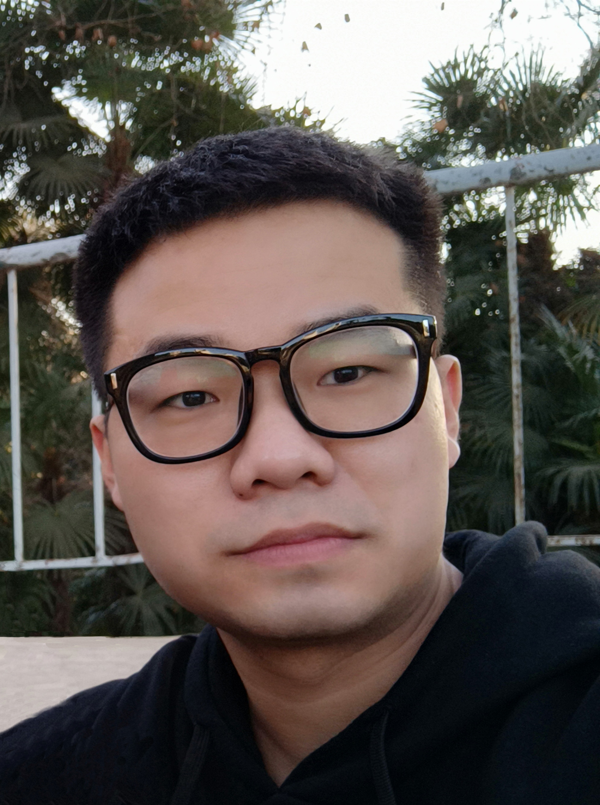

|
Jingwang Li
|
 |
About
Since Jun. 2022, I has been an autopilot algorithm engineer in FABU.AI, where I focus on modeling and solving a large number of optimization problems emerging in the field of autonomous driving. Before that, I was a master student in the School of Artifical Intelligence & Automation of Huazhong University of Science & Technology, where I worked on distributed/decentralized optimization under the supervision of Housheng Su. Prior to that, I graduated from Huazhong Agricultural University and got a bachelor degree in management, where I transfered from the School of Fisheries to the School of Public Administration in the sophomore year.
Email | Google Scholar | ResearchGate | Github
|
Research Interests
Distributed/decentralized optimization and learning.
Education
Sept. 2019 - Jun. 2022 : M.S. in Control Science & Engineering, School of Artifical Intelligence & Automation, Huazhong University of Science & Technology
Sept. 2016 - Jun. 2019 : B.Mgmt. in Engineering Management, School of Public Administration, Huazhong Agricultural University
Sept. 2015 - Jul. 2016 : Aquatic Science & Technology, School of Fisheries, Huazhong Agricultural University
Papers
Jingwang Li and Housheng Su*. “Implicit tracking-based distributed constraint-coupled optimization”, conditionally accepted by IEEE Transactions on Control of Network Systems. [PDF]
Jingwang Li and Housheng Su*. “Gradient tracking: A unified approach to smooth distributed optimization”, arXiv preprint arXiv:2202.09804. [PDF]
Jingwang Li and Housheng Su*. “Nested primal-dual gradient algorithms for distributed constraint-coupled optimization”, arXiv preprint arXiv:2205.11119. [PDF]
Awards
|